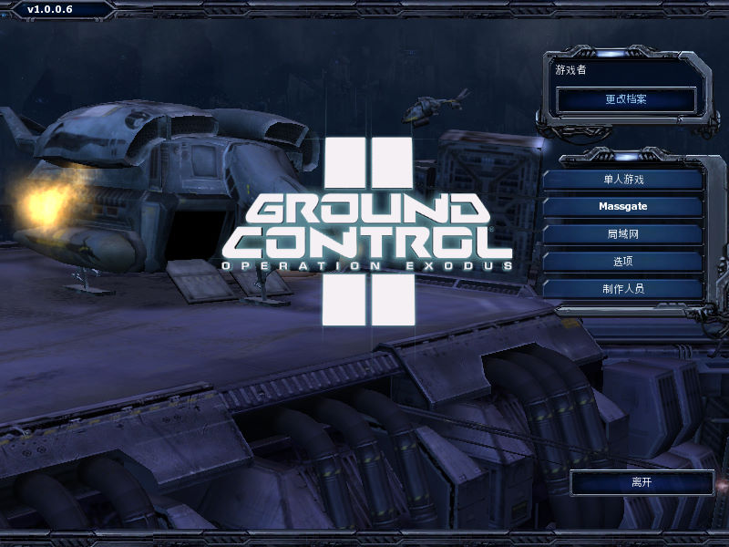
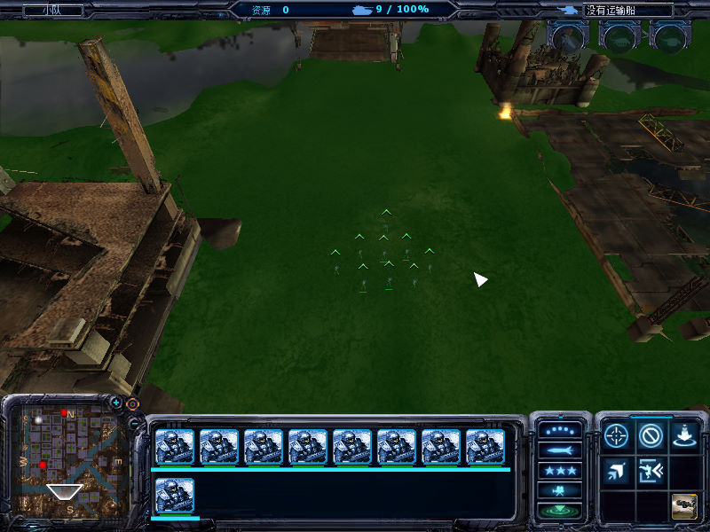

名稱：地面控制2：大撤退／脫逃計畫／撤離行動 (Ground Control 2: Operation Exodus，簡中／英文版)
簡介：Massive 2004年出品的即時戰術遊戲，由Sierra代理發行，大陸則由奧美簡中化並代
理發行 [待補]。


保護：光碟SecuROM 5.03+序號（DYL9-GYX4-TEG3-DEJ4-2753）
備註：非安裝移機者，需設定下列Registry：
[HKEY_LOCAL_MACHINE\SOFTWARE\Massive Entertainment AB\Ground Control II]
[HKEY_LOCAL_MACHINE\SOFTWARE\WOW6432Node\Massive Entertainment AB\Ground Control II]
"CDKEY"="DYL9-GYX4-TEG3-DEJ4-2753"
備註：1.0.0.8版無法在VirtualBox上執行（1.0.0.6版可以），虛擬機請改用VMware。
備註：簡中版必須在簡中系統上執行，否則會亂碼。
檔案：groundcontrol2_update_uk_1006_1008.rar = 1.0.0.8更新檔
中文包.rar = 1.0.0.6簡中漢化包（已免光碟）
nocd1006.rar = 1.0.0.6免光碟檔
nocd1008.rar = 1.0.0.8免光碟檔